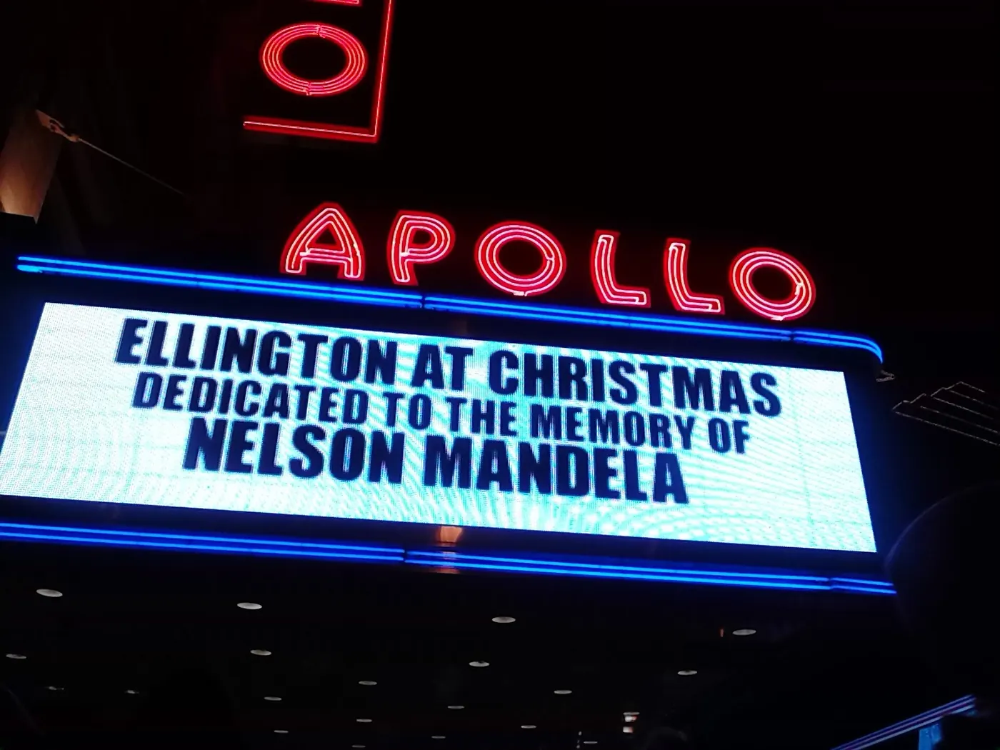

Harlem, uptown and unhurried
Harlem is where a lot of New York's music, literature and food history happened, and it still feels like a neighbourhood rather than a sight. Go for the Apollo, stay for 125th Street, and leave time to eat.
Checked 2 November 2026. Prices, opening hours and transport details were verified against official sources. Things change — confirm before you book. How we check.
The neighbourhood that changed American music
Harlem's reputation is bigger than its streets, but the streets hold up: brownstones, churches, the Apollo's neon and a main street that has long been the centre of Black New York.
Start at 125th Street and walk west from the Apollo toward the river, then turn north into the brownstone blocks around Strivers' Row and 138th Street. The neighbourhood is at its best on a weekday morning, when the streets belong to the people who live there.
The Schomburg Center for Research in Black Culture is the other essential stop, and the Apollo's amateur night is still the best value show in the city if your dates line up. Both are short walks from the 2/3 at 125th Street, which makes Harlem an easy half-day from Midtown.

The streets and sights worth your time
Four stops that give you the history and the everyday neighbourhood.
125th Street
Harlem's main street: the Apollo, the Studio Museum and a shopping strip that is busy all day.
The Apollo
The theatre that launched generations of performers. Check what is on before you go; the marquee is worth the walk either way.
Schomburg Center
A research library and archive devoted to Black culture, with exhibitions open to visitors.
Strivers' Row
Two blocks of handsome brownstones on 138th and 139th Streets, among the best architecture in Harlem.
Eating in Harlem
Soul food is the tradition; the neighbourhood's newer kitchens are worth a look too. Prices are a guide.
| Place | What to order | Price |
|---|---|---|
| Soul food restaurants | Fried chicken, greens and cornbread | mid-range |
| Harlem bakeries | Sweet potato pie and coffee | budget |
| Sunday brunch spots | Book ahead; brunch is a neighbourhood ritual | mid-range |
| Corner fish shops | Fried fish and sides, eaten on the go | budget |
A half-day in Harlem
A simple west-then-north walk that pairs the history with the residential streets.
-
10:00 — 125th Street
Start at the Apollo's marquee and walk the main street, looking at the side streets as you go.
-
11:00 — Schomburg Center
Spend an hour with the exhibitions, then walk north toward Strivers' Row.
-
12:30 — Lunch
A soul food plate or a bakery lunch; the neighbourhood is not short of either.
-
14:00 — Strivers' Row
Walk 138th and 139th Streets, then continue north for the brownstone blocks and churches.
-
16:30 — Riverside Park
Finish at the river for the sunset, then take the 1 downtown or walk back to 125th Street.
Getting there and getting it right
Harlem is well served: the 2/3 run up the west side to 125th Street, the A/B/C/D stop there too, and the 4/5/6 serve the east side. From Midtown the ride is about 20 minutes. Once you are there, the main streets are flat and the side streets are a grid, so walking is easy.
Weekday mornings are calm. Sunday is brunch day, when the restaurants queue and the churches fill, and weekday rush hours are busy with commuters. If you want live music, evenings are the reason to come; check the listings first.
Nearby and worth your time
Harlem is at Manhattan's northern edge, with the Bronx across the river and Central Park to the south.


Harlem questions
Is Harlem safe for visitors?
Yes. Harlem is a busy residential neighbourhood, and the areas around 125th Street and the main avenues are well used and well lit. As anywhere in New York, keep to main streets after dark and use city sense.
How do I get to Harlem?
The 2/3, A/B/C/D and 4/5/6 all stop at 125th Street, and the ride from Midtown takes about 20 minutes. The 2/3 is the fastest from the west side; the 4/5/6 from the east.
What should I see in half a day?
The Apollo and 125th Street first, then the Schomburg Center, then the brownstone blocks around Strivers' Row. Finish at Riverside Park or with a meal on Frederick Douglass Boulevard.
Is the Apollo open to visitors?
The Apollo runs shows and its amateur night. Check the Apollo's own site for what is on during your dates before planning an evening around it.